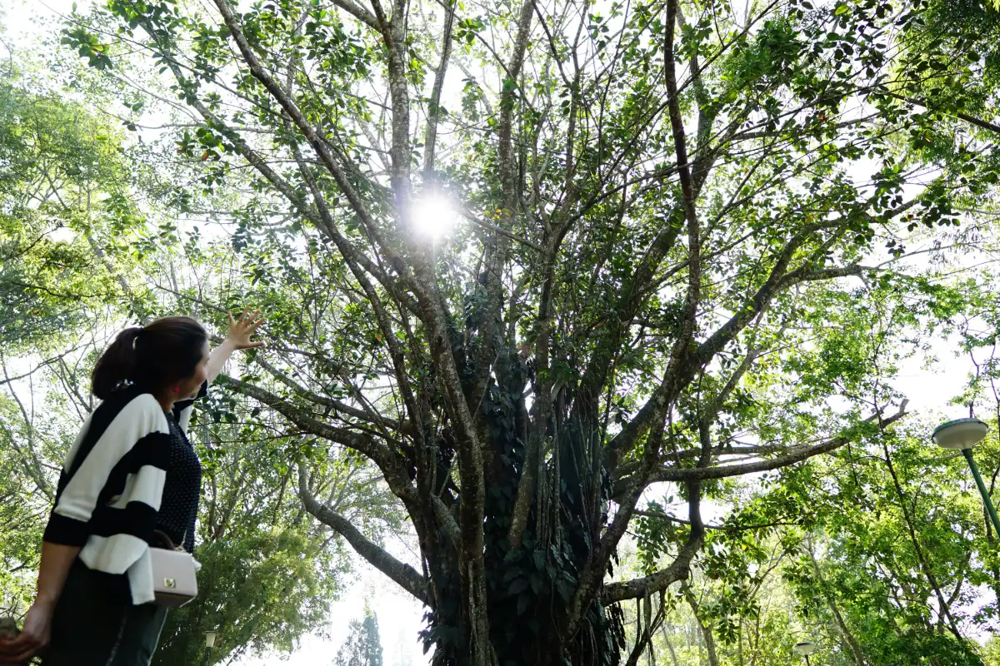
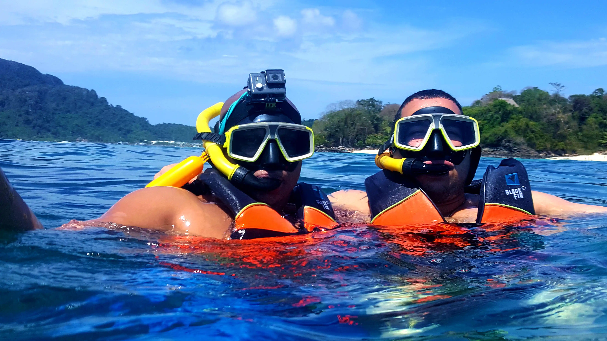
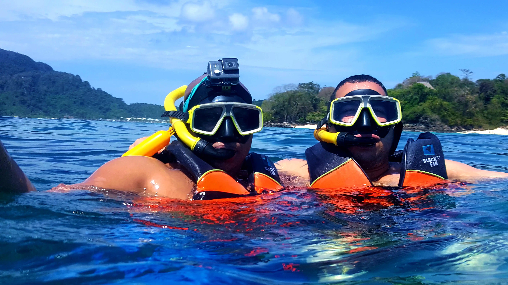

Swasdee Krub!!
Thailand is a beautiful country, full of rich history, beautiful landscapes and is extremely tourist friendly. This is especially true if you are an English speaker. Everything from road signs to hospital names are written in both English and Thai. Most hotel and restaurant staff can speak English to some degree or another. Thailand is a place that you are going to want to come back again and again. The country features amazing beaches in the south like Krabi and Phuket and beautiful mountain landscapes in northern part like Chiang Mai. In Bangkok, the country's capital, you can enjoy many beautiful Buddhist temples as well as the Royal Palace. Myself being, the fat guy that I am, can not recommend enough...the food. The food is cheap and delicious everywhere you go. Thailand prides itself as the street food capital of the world and based on what I've seen so far, they have a pretty strong claim to the title. Thailand is definitely bucket list worthy.
Preparing to Visiting Thailand:
If you want to visit Thailand you first need to find out whether you can get a visa on arrival or you need to apply for one in advance. To find out more visit the Thai Consulate website for the most up to date information on visa requirements and application process. I recommend ensuring your passport does not expire within 6 months and to apply for the visa, if needed, no less than 45 days before you depart. The process takes about two weeks in the USA but you want to have some wiggle room in the event of any mishaps.

Royal Flora Garden in Chiang Mai
Planning the Trip:
The first thing you will want to do is to buy an airline ticket to Suvarnabhumi Airport (BKK). I have found Skyscanner to be very useful in getting the best deal on airfare, otherwise you can try the other big names like Expedia or Priceline. Whichever you choose, the biggest expenditure of your trip is likely to be the flight. For example your typical 4 star hotel in Bangkok will run somewhere between 30-80USD a night, with some 2 to 3 stars going for even less than 30 dollars a night. Of course this prices change depending on the time of the year, however they still remain quite affordable. For choosing your hotels I recommend no other than Agoda. On your first trip to Thailand I personally recommend going the Bangkok->Southern Thailand route, we will refer to this, as route A. Meanwhile, Route B will be Bangkok->Northern Thailand route. Regardless of the route you choose, you should spend around 2 to 3 days exploring Bangkok
Thailand route A:
This route can be best described as the beach route, some of Thailand's most breathtaking beaches and most picturesque islands reside in the south. Phuket is by far the most popular tourist destination, however I prefer the other; less crowded islands like Ko Yao Noi or Ko Samui. Fun fact, "Ko" means island therefore if you see the word "Ko" in the beginning of a name it is most likely the name of an Island, although Phuket being the biggest Island in the region is usually referred to as just "Phuket". The region features a wide range of choices for which islands to visit as well as many boat tours that include snorkeling and sightseeing. I strongly recommend taking a boat tour, unless you are prone to sea sickness, in which case, be forewarned that the speed boat tours can get quite rough. If kayaking is more your speed, then I can not recommend enough the kayaking tours. Some of the private kayaking tours will even include a sunset grilled seafood dinner in a cozy uninhabited island and pick you up in a boat when it gets dark. Nothing like eating fresh grilled fish and shrimp in your own private island. Last but certainly not least make sure you leave your hotel confines and try the local food, especially the seafood options. You will not be disappointed and will be pleasantly surprised at both the service, quality and most of all affordable price.
Thailand route B:
If hiking, misty mountain landscapes, and beautiful temples are more your speed then this is the route for you. Northern Thailand like Chiang Mai and Chiang Rai, offer many beautiful mountain landscapes, camping, hiking spots and temples. Do note that the weather in the region during the winter, the best time to see the "fog Sea" or the "misty sea", can be quite chilly so don't forget to bring a sweater. If you are used to the Bangkok heat this can catch you by surprise. So places to take note of are: Mae Hong valley Province which provide many places to view the "fog sea", Bang Rak Thai village to visit the tea leaves farm and lake, Doi Suthep Mountain Temple, Wat Phra Singh Temple, The White Temple, Wat Huay Pla Kang Temple, The Night Bazaar and many others.
Gallery
All images not taken by me are duly credited under each image
 
